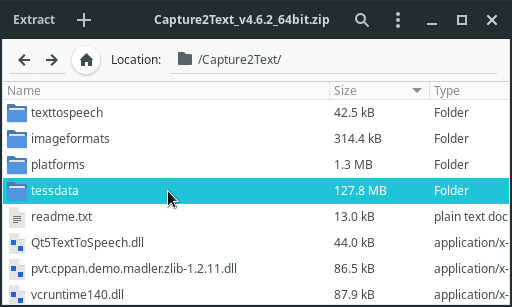

Mining from manga
When reading manga in Japanese, you sometimes need to quickly perform OCR on part of the screen to look up new words and add sentences to Anki. You can use an OCR program plus a few helper tools to do this.
Preface
Our goal is to look up words in manga.
Expected workflow:
- Capture a screenshot of the speech bubble containing Japanese text.
- Process the screenshot.
- Return the recognized text.
- Send the text to a dictionary program. For example, GoldenDict or Rikaitan Search.
- You can look up words and create Anki flashcards.
To recognize text in manga, you can use Tesseract or Lancet. Tesseract is lighter but usually less accurate. Lancet requires installing many Python packages that take several GiB of disk space, but it provides much better recognition.
This article explains how to set up both. The user workflow is the same for each (see the demo below).
Video demonstration.
Obtain manga
See Resources for places to get manga. For the best image quality, I recommend downloading manga from Torrent sites. If you don't want to wait, you can also read manga online on various websites. Either way, it's easy to find a great selection of manga to read.
Image viewer
To read manga,
it's helpful to have an image viewer.
I use nsxiv,
but any image viewer will work for this setup.
Many manga sites also let you read in a web browser.
To open a folder of images in nsxiv, run:
nsxiv .
File manager
Another quick topic up front is your file manager.
Manga often comes as an archive (*.zip, *.rar, etc.) which has to be unpacked,
so it's convenient to bind a key to extract archives with a single keystroke.
For example, my file manager is lf.
To extract archives by pressing E,
add this to the config file at ~/.config/lf/lfrc
(atool must be installed as well).
map E aunpack $fx
lf supports tags.
When you finish a reading session,
tag the last page (image file) you read by pressing t
so you don't lose your position.
The next time you open the folder,
you will see a red asterisk next to the tagged file.
To have lf automatically select the image currently shown in nsxiv,
add this to ~/.config/nsxiv/exec/image-info.
The snippet is taken from my dotfiles.
# If running as a child of lf, select the current file.
if [ -n "$id" ]; then
lf -remote "send $id select \"$1\""
fi
You can also set a keyboard shortcut in nsxiv
that tells lf to tag the currently displayed image.
For example,
to tag the current file by pressing t,
add the following code to ~/.config/nsxiv/exec/key-handler.
The snippet is taken from my dotfiles.
while read file; do
case "$1" in
# ...
# other keys you may have set
# ...
"t")
# Tag the current file using lf. E.g, the last read manga page.
if [ -n "$id" ]; then
lf -remote "send $id select \"$file\""
lf -remote "send $id tag x"
fi
;;
esac
done
OCR method
Although Lancet requires more system resources, I prefer it to Tesseract. It handles manga much better than Tesseract.
Setting up Lancet
pipx install ajt-lancet
Note: pipx installs Python packages in an isolated location (~/.local/share/pipx)
so you can later remove them with pipx uninstall <package-name>.
The first run will take longer than usual.
On first start Lancet downloads OCR model files (~500 MiB) to ~/.cache/huggingface.
Usage
Press the OCR shortcut (default Alt+O) to show the snipping window, then drag and hold the mouse to perform OCR. Lancet will ask you to select an area with Japanese text and will attempt to recognize it. The result is sent to GoldenDict or copied to the system clipboard.
You can combine Lancet with Rikaitan Search for quick lookups in real-time.
To send recognized text directly to GoldenDict instead of the clipboard, set "Copy to" to "goldendict" in Preferences.
Autostart
Before Lancet can recognize text, it must be running in the background. This is optional, but to minimize startup lag add the following command to your autostart.
lancet
Here's an example for i3wm:
exec --no-startup-id lancet
Setting up Tesseract
Install the following dependencies:
$ sudo pacman -S --needed tesseract maim xclip imagemagick unzip
- tesseract is the OCR engine. It is considered fairly accurate, and many people like it.
- maim is a utility for taking screenshots which can take parts of the screen.
- xclip is a tool for copying text to the clipboard.
- imagemagick is a command-line image editor. It's going to come handy to edit the screenshots before Tesseract analyzes them.
- unzip is a tool for extracting zip archives.
Download
maimocr
and save it as ~/.local/bin/maimocr.
maimocr is a script we are going to use to recognize Japanese text.
Make the file executable:
$ chmod +x ~/.local/bin/maimocr
The directory ~/.local/bin should be in your
PATH.
Usage
Tesseract doesn't work without
trained data files.
These files tell Tesseract how to read and recognize text from images.
When you first run maimocr, it should download Japanese data files automatically.
Check the terminal output to see if the process succeeds.
When you run it the second time,
maimocr will ask you to select an area with Japanese text and try to OCR it.
The resulting text will be saved to the system clipboard.
Use it in combination with Rikaitan Search
to quickly lookup Japanese words in real-time.
Keyboard shortcut
Bind this script to a keyboard shortcut in your DE, WM, sxhkd, xbindkeysrc, etc. Here's an example for i3wm:
bindsym $mod+o exec --no-startup-id maimocr
Now you can quickly call maimocr anywhere by pressing the keyboard shortcut.
Expanding data set
By default, maimocr automatically downloads
tessdata.zip
(mirror)
with Tesseract data files,
then saves the files to ~/.local/share/tessdata.
To use additional data files with maimocr,
copy any new *.traineddata files to ~/.local/share/tessdata.
Capture2Text files
These instructions are no longer necessary. The files are included by default.
Download capture2text.
We won't need the program itself because it's garbage
but the trained data files are going to be useful.
Extract the contents of the tessdata folder to ~/.local/share/tessdata:
$ unzip -j Capture2Text_v*_64bit.zip 'Capture2Text/tessdata/*' -d ~/.local/share/tessdata
Alternatively, download just the Capture2Text Japanese files from here.

Contents of the ZIP archive.
Troubleshooting
If you notice that the script fails to OCR certain images, try to zoom in or find a scan with a better resolution. Tesseract works poorly at low resolutions.
Nonstandard fonts often fail to OCR properly.
In this case I don't have a definitive answer at the moment.
Try searching for more *.traineddata files online
and adding them to the tessdata folder.
Adding screenshots
If you want to add a screenshot from a manga to your Anki card,
maim
can do that too.
maimpick
is a script that uses maim to screenshot parts of the screen and copy them to the clipboard.
Install it to ~/.local/bin, make it executable and bind it to a key.
Explore my dotfiles for details.
In addition to maim, maimpick requires
dmenu
and
xdotool
to work.
Note: ames is another program that can add screenshots to Anki.
Other software
See Resources.
Tags: guide